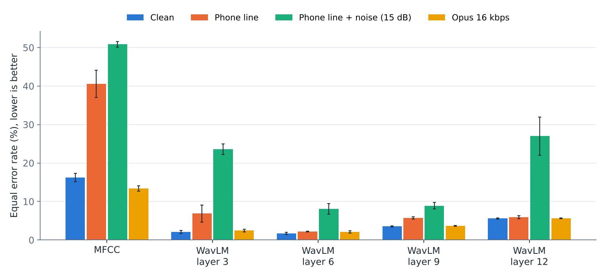
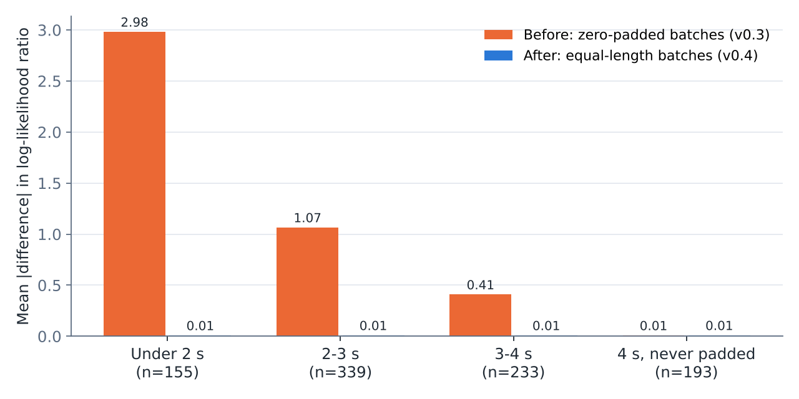

Experiment · Speech deepfake detection
My fake-voice detector called my own WhatsApp voice note AI-generated. What it gets right on phone audio, and what it does not
I built a detector for AI-generated voices, tested it on simulated phone lines, and put it in the browser. The benchmark numbers looked good. My own voice notes told a different story.
By Muzammal Hussain · 9 November 2026, updated 11 November 2026 · 9 min read
Voice cloning now takes a few seconds of someone's speech, and the calls that use it arrive over phone lines and messaging apps, not in studio quality. VoiceGuard is my research project on detecting fake voices in exactly those conditions. This first stage uses one well-known dataset, a self-supervised speech model and a small classifier, and asks two questions: does the detector survive a phone line, and when it says "95% sure", can you believe it? Along the way I found a bug in my own feature extraction, and a real-world failure that the benchmark did not predict.
Key findings
- Frozen WavLM Base+ features from layer 6, with a small neural network on top, kept a mean equal error rate (EER) of 1.7% on clean audio, 2.2% over a simulated phone line and 2.1% after low-bitrate Opus compression, over three training seeds.
- Which layer you take matters more than which classifier you train. With noise added to the phone line, layers 3 and 12 rose to 24-27% EER while layers 6 and 9 stayed at 8-9%. A classic MFCC baseline was close to chance on the phone line (41%).
- The scores still ranked clips well under noise, but the confidence did not transfer: in 12 of 40 model and condition pairs, the calibrated scores were worse than always answering "I don't know" (Cllr above 1).
- Zero padding in batched feature extraction had silently changed the features of short clips. For clips under 2 seconds, the score moved by 2.98 on average (in log-likelihood ratio); for clips that were never padded, by 0.01. I fixed it and re-ran everything.
- In my own informal tests with the first browser demo, my voice recorded on a laptop scored 0.3% "AI voice", but a real English WhatsApp voice note scored 97.4% (93.6% after the padding fix). Simulated Opus compression did not reproduce this failure.
The setup
The data is ASVspoof 2019 Logical Access, a standard benchmark of real and synthetic English speech. Its training set has 25,380 clips made with six spoofing systems (A01-A06); its evaluation set uses thirteen systems (A07-A19), most of them unseen in training, and different speakers. I trained on all training clips and tested on a fixed sample of 9,800 evaluation clips: 2,000 real and 600 for each attack.
Every test clip was scored in four conditions: clean; a simulated phone line (8 kHz, the 300-3400 Hz telephone band and G.711-style companding); the same line with white noise at 15 dB signal-to-noise ratio; and a round trip through Opus at 16 kbps, the codec family used by many voice-note and VoIP apps. Training used clean audio only, so every other condition is a shift the model never saw.
For features I used WavLM Base+, a self-supervised speech model, frozen, and took the average of its hidden states from layers 3, 6, 9 and 12 over the first 4 seconds of each clip. On top sits either logistic regression or a small neural network (one hidden layer). Scores are calibrated on the development set into log-likelihood ratios, so a score can be read as evidence for "fake" or "real". Each neural network was trained with three random seeds.
Which layer survives the phone line

| Features (neural network) | Clean | Phone line | Phone line + noise | Opus 16 kbps |
|---|---|---|---|---|
| MFCC | 16.3 | 40.6 | 50.8 | 13.4 |
| WavLM layer 3 | 2.1 | 6.9 | 23.6 | 2.5 |
| WavLM layer 6 | 1.7 | 2.2 | 8.1 | 2.1 |
| WavLM layer 9 | 3.5 | 5.8 | 8.9 | 3.7 |
| WavLM layer 12 | 5.6 | 6.0 | 27.0 | 5.6 |
EER in percent: the error rate at the threshold where real voices wrongly flagged and fake voices wrongly passed are equally frequent. Layers 3 and 6 are almost equal on clean audio, but only layer 6 holds up when the channel changes. The noisy phone line is the hardest condition for every model, and it is where single training runs become unreliable: across seeds, layer 12 ranged from 23.1% to 32.6%, while layer 6 stayed between 6.8% and 9.5%. Three attacks did most of the damage for layer 6 with noise (seed 42): A18 rose from 3.2% to 26.3%, A17 from 1.1% to 20.9% and A19 from 4.6% to 18.0%.
When it says 95%, is it right?
A detector that ranks clips well can still be badly overconfident. To separate the two, I used Cllr, a cost from speaker recognition that scores the evidence itself: 0 is perfect, and 1 is what you get by always answering "I don't know". Its partner, minCllr, is the same cost after the best possible recalibration, so the gap between them is the cost of being wrong about your own confidence.
On clean audio the calibrated scores behaved. With noise on the phone line they did not: in 12 of 40 model and condition pairs Cllr was above 1, including five of the eight WavLM models; only layer 6 (both classifiers) and layer 3 with the neural network (0.97) stayed below it. For layer 12 with the neural network, Cllr was 3.49 while minCllr was 0.64. The ranking was still usable; the confidence, fitted on clean audio, was far too high. For layer 6 the noisy-line Cllr was 0.63 against a minCllr of 0.34: worse than clean, but still informative. One practical consequence: when the model is allowed to abstain on its least confident clips, layer 6 with noise drops from 9.0% errors on all clips to 4.1% on the 80% it is most sure about, while layer 3 with logistic regression stays at 45-51% at every coverage. It is confidently wrong.
A bug in my own pipeline: zero padding
To build the browser demo, I checked the browser model against the experiment pipeline clip by clip, and they disagreed. The cause was in the experiments, not the browser. To process clips in batches, shorter clips had been padded with silence up to the longest clip in each batch. WavLM Base+ normalises its first layer over the whole input, silence included, so the padding changed the features of short clips. The browser processes one clip at a time and never pads.

The pattern was clean: the more padding a clip had received, the further its score moved, and clips cut at exactly 4 seconds, which were never padded, matched to 0.01. For clips under 2 seconds the verdict changed on 11% of them. I changed the pipeline so that each batch holds only clips of equal length, re-extracted every feature and re-ran every experiment; the numbers in this article are from the fixed run. The conclusions did not change, but the headline did move (layer 6, clean, seed 42: 1.8% before, 2.1% after). After the fix, browser and pipeline agree on 100% of verdicts in every length group, with identical EER on the check clips. If you batch audio through a self-supervised model, check whether padding changes your features.
The browser demo, and my own voice notes
The demo runs the whole detector, from waveform to calibrated score, as one ONNX model in the browser, so the audio never leaves the device; it took about 0.75 seconds per clip on my laptop. Then I tried it on my own voice, first with the original demo and again after the padding fix:
| Clip (my own voice, all real) | First demo: verdict (AI probability, LLR) | After the fix: verdict (AI probability, LLR) |
|---|---|---|
| Recorded on a laptop microphone | Likely real (0.3%, -5.79) | Likely real (0.0%, -8.23)* |
| English WhatsApp voice note, uploaded as a file | Likely AI-generated (97.4%, +3.64) | Uncertain (93.6%, +2.67) |
| The same voice note, played through a speaker and recorded again | Likely AI-generated (99.9%, +7.52) | Likely AI-generated (95.5%, +3.06)* |
| A different voice note, in Urdu, uploaded as a file | Uncertain (5.3%, -2.87) | not retested |
* New recordings made the same way, so not the identical clip. A real English voice note, sent through WhatsApp, was called AI-generated with 97.4% confidence by the first demo. After the padding fix the same file scored 93.6%, which the demo reports as "Uncertain", and the replayed note still crossed the 95% line. That is exactly the false alarm a tool like this must not raise. My first guess was the codec, so I added the Opus condition to the experiments. It did not explain it: at 16 kbps, Opus barely moved the error rate or the calibration of the layer 6 model (Cllr 0.13). Whatever pushed my voice note over the line, whether the phone's microphone and processing, the app's settings, or simply a voice and room unlike the studio recordings of ASVspoof 2019, a clean simulation did not capture it. These are four clips, not a benchmark, but the lesson is the same as for the calibration results: a detector trained on one corpus should be tested on real recordings from the channel where it will be used.
What I take from it
- Test speech detectors on the channel they will face. A clean benchmark score of 1.7% says little about a noisy phone call.
- Report calibration, not only EER. A model can rank well and still be confidently wrong, and Cllr against minCllr shows the gap.
- The middle layers of WavLM Base+ were the most robust here; the first and last layers were not.
- Check batched feature extraction for padding effects, especially with models that normalise over the whole input.
- Simulated codecs are not real apps. A handful of real voice notes found a failure that thousands of simulated clips did not.
Limitations
- One English dataset with spoofing systems from 2019. Recent voice-cloning tools and other languages are not covered yet; that is the next stage.
- The phone line and Opus conditions are simulated. The real-app tests are a handful of my own clips and are reported as anecdotes, with the first demo model.
- Features are frozen; the backbone was not fine-tuned. Three classifier seeds, one sample of clips and one feature extraction.
- EER and Cllr are threshold-free summaries; the error at any fixed threshold depends on how many fake calls you expect.
Reproduce the experiment, or try the detector
The repository has the pipeline as a tested Python package, both Kaggle notebooks, the clip IDs and every table in this article. The browser demo states its limitations next to every result, and it is a research demo, not a forensic tool: never use it alone to decide about a person, a payment or a call.
Data: ASVspoof 2019 database (Wang et al., Computer Speech & Language, 2020), University of Edinburgh, Open Data Commons Attribution License. Features: WavLM (Chen et al., IEEE Journal of Selected Topics in Signal Processing, 2022). Cllr: Brümmer and du Preez, Computer Speech & Language, 2006. Opus: RFC 6716 (Valin et al., 2012). This is a small engineering experiment, not a peer-reviewed paper.